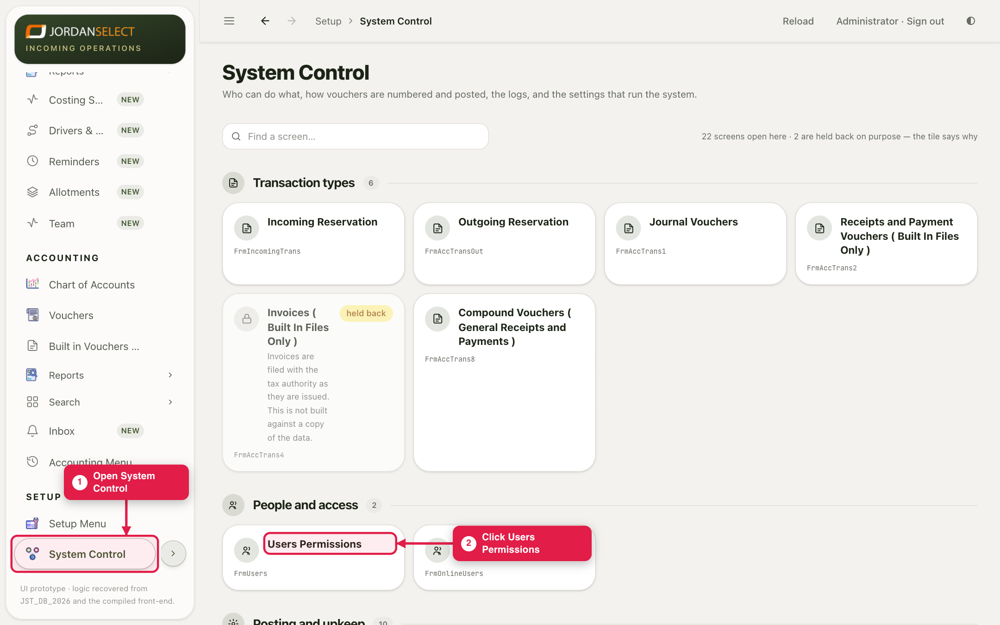
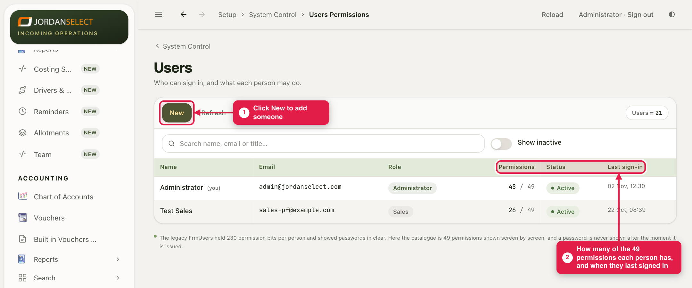
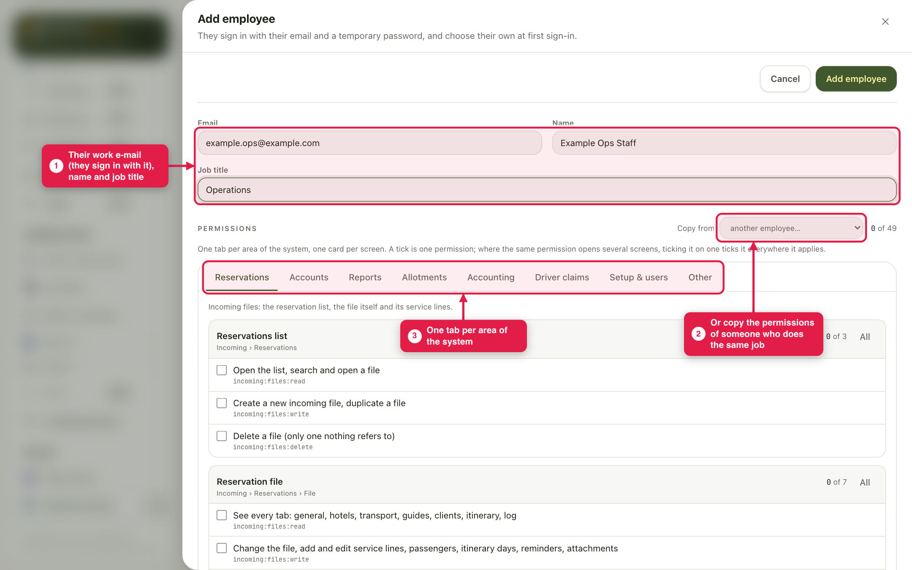
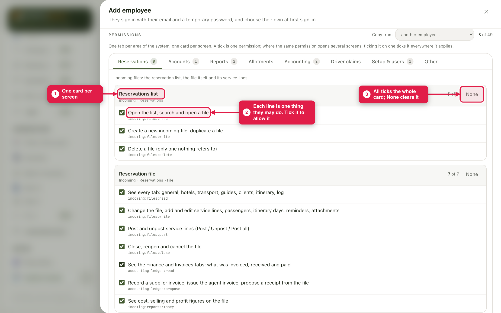
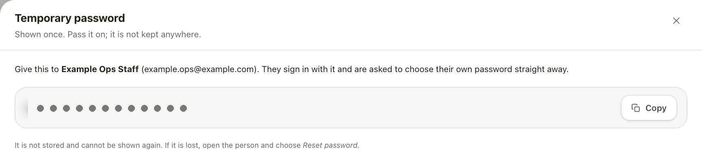

A new member of staff needs to sign in. Give them a user with their own e-mail, only the permissions their job needs, and a first password.
WhoThe administrator
WhereSetup → System Control → Users Permissions
Takes5 minutes
You needTheir work e-mail, and what their job is
How it works
Each person signs in with their own e-mail. What they can see and do is set by permissions, one tick each, arranged by area and by screen. The CRM makes them a temporary password and shows it to you once. At their first sign-in they choose their own.
Example in this guide: a new operations colleague, Example Ops Staff (example.ops@example.com), who works on the reservation list and the files.
1. Open the users
1
In the menu on the left, click System Control, then the Users Permissions tile.

System Control holds the settings that run the CRM.
2
The list shows everyone who can sign in, how many of the 67 permissions each has, and when they last signed in. Click New.

People who have been switched off are hidden here (guide 3).
2. Who they are
3
Type their Email (they sign in with it), their Name and their Job title.
4
Someone already does the same job? Choose them in Copy from to start from the same ticks, then change what differs.

The permissions are below, one tab per area of the CRM.
3. What they may do
5
Go through the tabs. Each card is one screen, and each line is one thing they may do there. Tick the ones their job needs. All ticks the whole card; None clears it.

Here the reservation list and the file are ticked in full.
Start smallGive only what the job needs. Adding a tick later takes a minute (guide 2). Money is a separate tick: without “see cost, selling and profit” the figures are hidden.
4. Their first password
6
Click Add employee at the top. The CRM shows their temporary password, once. Click Copy and give it to them in person or by phone, then click Done.

The password is hidden in this picture. On your screen it is shown in full.
Shown once onlyThe CRM does not keep the temporary password and cannot show it again. If it is lost, use Reset password (guide 3). Do not send it in the same e-mail as their sign-in address.
5. Check your work
They are on the list, marked temporary password until they choose their own.
Their permission count matches what you ticked.
At their first sign-in they are asked to choose a new password.
Last checked: ____ · Screens shown are from a test copy of the CRM with made-up data.